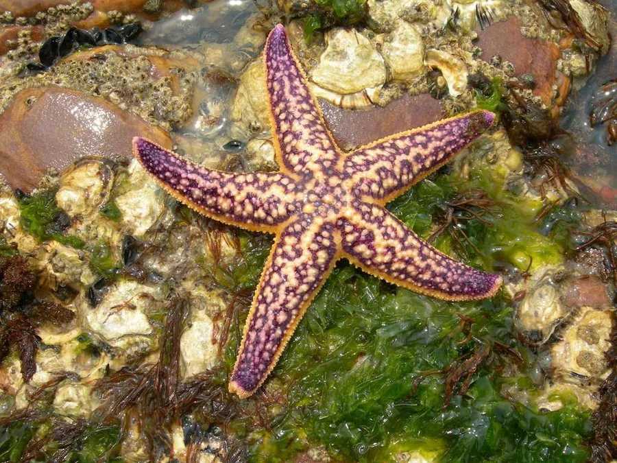

其他无脊椎动物 · 动物界
多棘海盘车 Asterias amurensis

具五条腕的大型海星，五腕展开可达 40 cm，以贝类为食，原产北太平洋，被船只带入澳大利亚后成为破坏性入侵物种。
- 分类
- 门棘皮动物门纲海星纲目钳棘目科海盘车科属海盘车属
- 栖息环境
- 潮间带至浅海的沙泥底、岩礁和贝类养殖区
- 地理分布
- 西北太平洋沿岸；澳大利亚南部为入侵种群
- 保护级别
- 暂无评估；在澳大利亚被列为入侵物种
物种志
多棘海盘车通常有 5 条腕，偶见 4 或 6 条，五腕展开直径可达 30–40 cm，体色从黄橙、橙红到紫色，表面密布小棘和叉棘，体盘大而厚实。
它是捕食性海星，主要吃贻贝、牡蛎、扇贝等双壳贝类，也取食螺和小型甲壳动物。捕食时把胃翻出体外，直接消化贝壳里的肉。一只雌海星可产卵数千万粒，幼体浮游数周后沉降；腕和体盘损伤后还能再生，再生能力在动物界十分突出。多棘海盘车原产日本、朝鲜半岛、中国北部沿海和俄罗斯远东，20 世纪随船舶压舱水传入澳大利亚塔斯马尼亚，在当地缺乏天敌，大量吞食养殖贝类，成为澳大利亚最严重的海洋入侵物种之一。
形态与习性
- 食性捕食贻贝、牡蛎、扇贝等贝类，会翻出胃消化猎物
- 体型五腕展开直径可达 30–40 cm
- 繁殖一只雌海星可产卵数千万粒
- 再生腕和体盘损伤后可再生
- 原产地西北太平洋沿岸
- 入侵1986 年传入澳大利亚塔斯马尼亚，吞食养殖贝类
趣味知识
- 多棘海盘车把胃翻到体外，直接消化贝壳里的肉。
- 1986 年它随船舶压舱水传入澳大利亚塔斯马尼亚，成为当地最严重的海洋入侵物种之一。
- 海星断掉的腕可以再生，但完整的断腕未必能长成新个体。